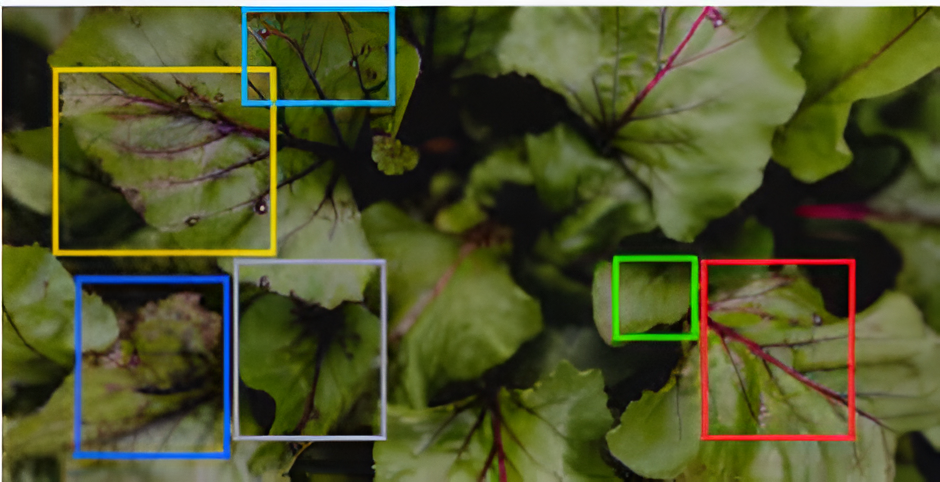
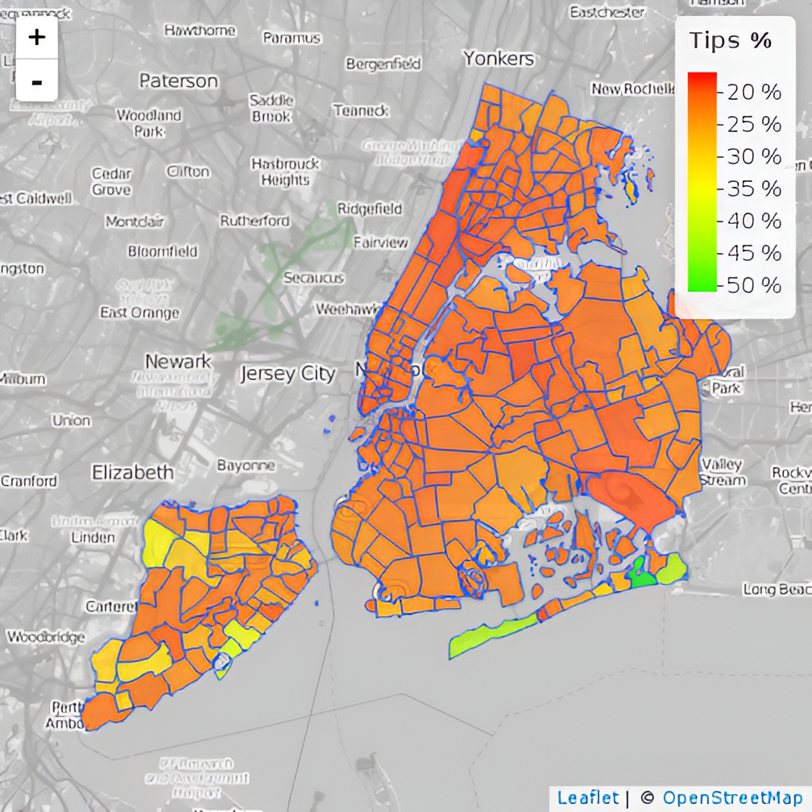

PORTFOLIO
A collection of projects I've worked on.

HRM- Churn rate prediction using machine learning
Python/Decision Tree/xgboost

Twitter Bot for Product Monitoring
Python/Keras/Tweepy
Opinion vs. Claim Classifier: Enhancing Content Moderation at TikTok
Python/sklearn/RandomForestClassifier

Plant Disease Detection- Mahindy Project
Python/Keras/CNN/RCNN

Statistical Review and A/B Testing for New York City TLC Project
Python/SKLearn/BigQuery

Customer Churn Turnover- ML
Python/Keras

Blog on using PACE as an analytical framework
Word/WordPress

COVID-19 fatalities and risk of conflicts - Youth Bulge
Excel/r/research

Data Visualization Dashboard- Executive Dashboard
Tableau